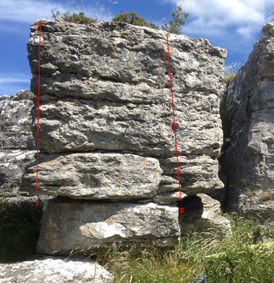

Klintklinten
Lat: 57.403476
Long: 18.8235
Allmänt
Gotlands bästa boulderområde längs med en låg och brant klintkant på det natursköna Östergarnslandet. Endast en mindre del är utvecklat. Greppfattig kalksten av för det mesta hög kvalitet. Den mest utvecklade väggen är västvänd och har således kvällssol. Det går att klättra inne i Fåraherdens grotta vid regn. Endast den modige toppar ur problemen då det är högt och löst.
Access / boende mm
PARKERING:
Parkera inte så att passerande bilar och jordbruksredskap hindras. Om grinden upp mot Fåraherdens Grotta är öppen går det bra att parkera innanför. Om fler parkeringsplatser behövs kan man parkera diskret på bondens gård intill ladugården (inte så att jordbruksredskap och andra fordon hindras).
BOENDE:
Det finns camping och möjligheter att hyra stuga i fantastisk miljö i närområdet. Östergarnstrand/Sandviken ligger ca 4-5 km från Klintklinten.
RÖJNING:
Det är okej att röja bort taggbuskar och annan sly intill klippan. Samla isåfall ihop riset i en hög. Lämna träden orörda.
CHIPPING/BULTAR:
Nej tack!!!
ELDNING/GRILLNING:
Det är INTE okej att göra upp eld intill klippan med tanke på att lamm ofta vistas på platsen.
ÖVRIGT:
Visby Klätterklubb har en mycket bra relation till markägaren och vill även ha det i framtiden. Ta med allt skräp ifrån platsen och visa hänsyn till boende och lammen som ibland finns intill klippan. Vid funderingar, kontakta accessansvarig VKK / Per Bäckström (0730-222990)
Vägbeskrivning
<googlemap version="0.9" lat="57.404699" lon="18.824387" zoom="17">
57.442148, 18.981833
Östergarnsholm, Gotland, Sverige
57.403797, 18.824054, Klintklinten
</googlemap>
Från Visby: kör länsväg 143 via Roma mot Ljugarn. Vid Alakorset (ca 12 km innan Ljugarn) sväng vänster mot Kräklingbo/Katthammarsvik. Sväng därefter höger i Kräklingbokorset och kör mot Katthammarsvik. Efter ca fem kilometer, sväng höger mot Gammelgarns Kyrka (även skyltat cykelverkstad). Vid Gammelgarns Kyrka, kör rakt i korsningen. Efter några hundra meter så syns klippan rakt österut... Låter det krångligt? Lugn, det är väl värt besväret...
Grottbjörnens Hylla
Grotta / överhäng vidare vänster om bondens grotta, bilder och närmare beskrivningar är påväg.
-
- 1. ?
- 6A+
- Endast en lång move, sittstart på hylla med hög fot, lång sträckning till kanten.
-
- 2. Jabba the Hutt
- 6B
- Sittstart på en list, gå rakt upp.
Bondens Grotta
thumb|150px|
thumb|150px|
Grotta mitt emot bondens hus och precis till vänster om Smultronväggen. Än så länge ganska outvecklad, men bedömt finns potential för några långa taktraverser i de högre graderna.
-
- Det förbjudna trädet
- 4
- Till vänster om "Urtoppning vid livets träd" Start sittandes med händerna på den kraftiga kanten. Trädet är INTE med vilket gör urtoppningen lite läskig för en 4. Se till att ha spottare.
-
- Urtoppning vid livets träd
- 4
- Rakt upp under trädet, använd trädet för urtoppning. Lätt led, men potentiellt elak landning.
-
- Öppet projekt
- ??
- Samma sittstart som Mors problem men man tar till vänster när man kommer ut till Mors bekymmer. Istället för att gå upp till lilltaket fortsätter man vänster i en travers. Hela vägen till lodräta sprickan, där man går upp.
-
- Som en banan
- 6A
- Samma sittstart som Mors problem men man tar till vänster när man kommer ut till Mors bekymmer. Upp under lilltaket och urtoppning på vänster sida av lilltaket.
-
- Mors problem
- 6A
- Alternativ start till Mors bekymmer som höjer bekymret till ett problem. Sittstart inne i grottan med två händer på jugg. Upp till lite slopeig crimp och vidare höger ut till Mors bekymmer, och upp.
-
- Mors bekymmer
- 5C
- Sittstart under areten. Rakt upp med ömsom crimpar och hyllor. Urtoppning upp på lilltakets högra sida. Höger sida av areten ej med. Sva.
Smultronväggen
Litet vertikalt klippparti mittemot husen. Den högra delen av väggen är övervuxen med murgröna. Precis till vänster ligger en stor grotta.
-
- Helvetesgapet
- 4
- Sittstart till vänster om Nangiala med fötterna ner i hålet. Inte så långt till vänster så man är på areten. Rakt upp med urtoppning mitt på väggen.
-
- Nangiala
- 4
- Spricka i innerhörn till vänster om Smultron.
-
- ?
- 5B
- Väggklättring mitt emellan nangiala och Smultron. Varning, lös i slutet!
-
- Smultron
- 6B
- Ståstart på rundad vertikal arete. Välj att starta antingen på två slopiga lister eller två underhandsgrepp
-
- Rör ej murgrönan!
- 6A
- Sittstart i sprickan till höger om Smultron. Upp och förbi enfingerhål
Mellan Smultronväggen och fåraherdens grotta ligger ett väggavsnitt som till höger är vertikalt, och till vänster överhängande. Den vänstra delen av den vertikala väggen delas av ett litet tak. Här ligger några problem:
-
- Jazz Jackrabbit
- 6B+
- sittstart på två tydliga krimpar. Sen ett långt flytt till upp höger på en krimp .
-
- Tripp
- 5+
- Lättaste vägen upp på den högra delen av väggen.Highball.
Mysiga Blocket
Ett helt eget block vänster om Fårahedens grotta.
-
- Professor Purjo
- 5A
- Upp i vänstervänt litet dieder i vänstersidan av det vita fältet.
-
- Gubben Garbo
- 6C
- Krimpigt mitt i det vita fältet. Ståstart
Bägge ovanstående problem har potentiella sittstarter.
-
- Confused
- 7B
- sittstart väldigt långt ner på en arete vid ett träd. Vänsterhand på ett sidotags crimp. Högerhand väldigt långt ned i på ett pocketliknande grepp. Sen rakt upp längs med areten. Mycket crimpig. Ståstart ca 6B (etablera på sidotag med vänster och bra crimp med höger).
Fåraherdens Grotta
thumb|150px|
thumb|150px|
thumb|150px|
Den kraftigt överhängande grottan som har ett litet hus i mitten. Finns potential för ganska många fler branta boulders. En del helt i tak.
TILL VÄNSTER OM LINBASTUN
-
- Mården i Midsomer
- 6B
- Sittstart på två crimps på raka väggen runt hörnet från Icy Nipples, slutgrepp vid det lilla taket
-
- Dronten
- 6A
- Sittstart på bra sidogrepp och pinch, håll sedan till vänster om arêten, sluta på lite slopig hylla
-
- Inställd Julafton
- 6B
- Sittstart på en sidotagsjug. Rakt upp, avslut på hyllan rakt upp (Samma som Dronten).
-
- Icy Nipples
- 6C
- Sittstart strax till vänster om Mustamihno
-
- Mustamihno
- 6B/7A
- sittstart tv om ekg. Högerhand pinch på tufa, vänster hand slappt sidotag. Jugg mitt emellan eliminerad för den högre graden. Slutar uppe på kanten till vänster.
-
- EKG
- 6C+
- Längst till vänster i grottan.
-
- Battlecruiser
- 7B
- Sittstart inne i grottan
TILL HÖGER OM LINBASTUN
-
- Shazam
- 7b+
- Pumpande travers från höger till vänster med trixigheter i slutet. Följ den nedre sprickan utan attt gå upp till den stora jugg sprickan. Ledgraderad då den är lång.
-
- Blair Witch Project
- 7c+
- Den ultimata traversen! Efter att du klättrat hela Shazam, fortsätt rakt upp till stora de stora greppen. Följ sedan dem åt vänster tills andra sidan huset. Men stå inte på huset! På andra sidan huset forstsätter du vidare på crimpiga och sloopiga grepp tills du kommer till en fin jugg. Det går att förlänga leden ytterligare om man vill.
-
- ?
- 7a
- Pumpande travers på stora grepp från höger till vänster, följ den stora sprickan hela vägen förbi fårhuset och sluta precis bortanför huset. Obs stå inte på huset! Ledgraderad då den är lång.
-
- The Master Sword
- 7C+/8A
- Tydlig linje i taket, slutjugg där nästa tak börjar.
-
- Hydra
- 7A+
- Sittstart på list inne under det mindre taket strax till höger om grottan. Slutgrepp på hyllan mitt på raka väggen
Nedfallna Kanten
thumb|150px|
thumb|150px|
Till höger om fåraherdens grotta ligger en liten sektion nedfallen klintkant.
-
- Baaaluuubaa
- 6C
- Sittstart på areten sen ut till höger och rakt upp.
-
- Magont
- 7B+
- Tydlig fin linje mellan Areten och Arytmi, med sittstart på crimpar och upp via crimpar och pockets. Toppar ut i "grushögen" rakt upp. Se upp för lösa stenar!
-
- Arytmi
- 6B+
- Sittstart i två tydliga lister. Drag upp till slopig hylla, sedan snett upp åt vänster
-
- Armbågen i gruset
- 6B
- Sittstart till höger om den högra areten. Klättra ut till vänster mot areten och sen rakt upp till ett mantlingsliknande avslut.
-
- Det lutande planet
- 5C
- Ståstart med hylla för högerhanden och grepp för vänster. Ut en bit till höger och sen upp och sluta på kanten under det lösa.
-
- Jagad av en säl
- 6A+
- Sittstart på areten högst upp mot den andra väggen. Följ areten rakt upp till de lösa partiet och avsluta där. Toppa inte ur!
Raka Väggen
thumb|150px|
Direkt upp till höger ifrån nedfallna kanten
-
- Zimba
- 6A
- vertikal klättring med några pockets.
-
- Skallskada
- 6C
- Ståstart i enfingerpocket och undercling. Upp förbi bla två enfingerpockets för höger hand
-
- Jösses flickor
- 6A
- Till höger om Skallskada. Klättra snett ut åt höger och sedan rakt upp. Potentiell sittstart (hårdare) upp i vass spricka.
-
- Buskapokalyps
- 5B
- Börja sittandes på huk längst in vid väggen, utan händer till start. Fortsätt uppåt och till vänster under taket.
Alldeles till höger om raka väggen finns dessa
-
- Nala
- 5C
- halvsittstart händerna på en krimpig jugg..
-
- Nässelsoppa
- 6B
- sittstart på en jugg. Sen rakt upp mot en sloop med ett knepigt flytt förbi. risig urtoppning.
Zorrotaket
thumb|150px|
Fortsätt höger ifrån raka väggen ca 50m.
-
- Underbar och älskad av alla i klubben
- 7B
- Sittstart med bra grepp, upp höger pocket, långt skick vänster jugge, långt skick höger till kant, vänster krimplist, toppa ur.
-
- Under underbar
- 6C
- Ståstart med bra grepp i listen, krimp vänster, höger pocket, vänster pocket under taket, höger på bullen, vänster ut till kanten, toppa ur.
Balkongväggen
Fortsätt höger från Zorrotaket tills du kommer till ett öppet parti med vägg.
-
- Projekt
- ?
- Sittstart på två tufor, fortsätt rakt upp, läskig dyno som avslut.
-
- Projekt
- ?
- Ståstart i 1fingerpocket, gå rakt ut och upp förbi första taket, traversera höger och fortsätt upp längs tufan.
Lutande Stenen på Gotland
Fortsätt höger från Zorrotaket
-
- Akta buskarna
- 4
- Rakt upp!
-
- Rosendöden
- 5A
- Sittstart på areten och följ den upp

-
- 1.
- ?
- Sittstart på areten som är brantast och följ den upp
-
- 2. Småfolkets land
- 5A
- Sittstart under ett litet tak, sen rakt upp
Fårscenen
Alldeles bredvid Lutande Stenen
-
- 3. Dinkelfjutt
- 6B+
- Start vid tydlig list på kanten, Heel hook på annan tydlig list på kanten
-
- 4. Projekt
- 6A/6B?
- Lägs med sprickan i hörnet
-
- 6. Projekt
- 7B/7B+?
- Sittstart under överhänget. Lite dålig landning, så ta med många paddor och spottare
Under utveckling och uppdatering.
Category:Bouldering
Category:Gotland